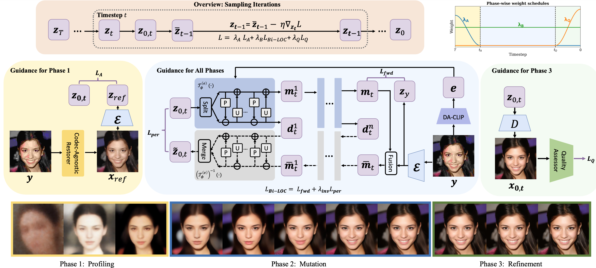

Plug-and-Play Bi-LOC for phase-aware restration
We employ a phase-aware PnP framework built on LDMs. Top left: Overview of the sampling iterations (from T to 0). Top Right: Phase-wise weight schedules. Bottom: Phase I: ACLA stabilizes early steps using a reference from a codec-agnostic blind restorer. Phase II: Bi-LOC decouples and recomposes measurement and detail in the latent space, ensuring data consistency. Phase III: PAP utilizes a no-reference perceptual score for late-stage polishing, aligned with human preference.

Fig. 1 Illustration of Phase-aware PnP strategy for CIR sampling.